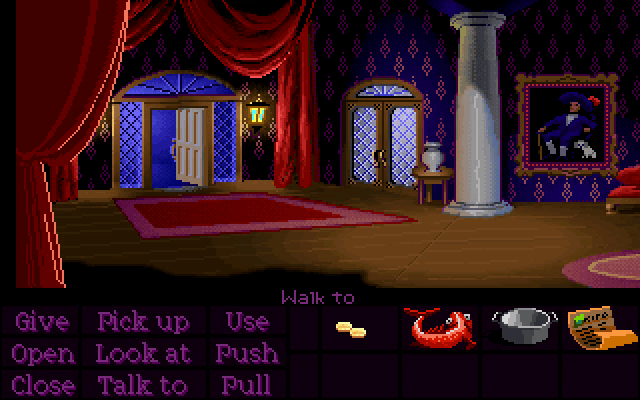
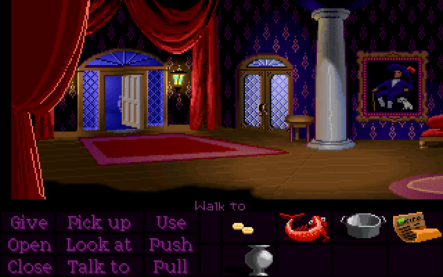
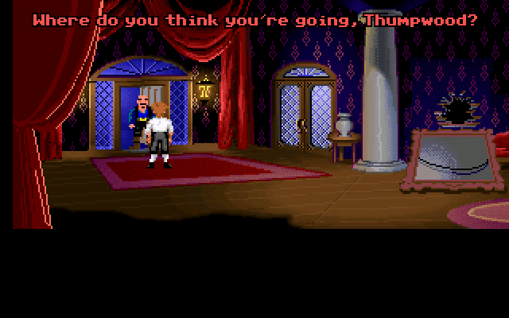
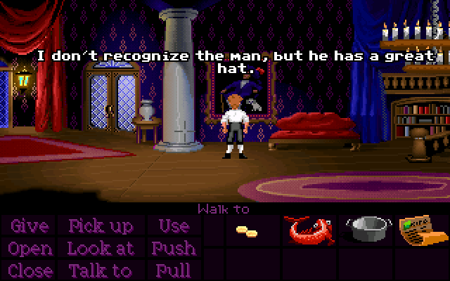
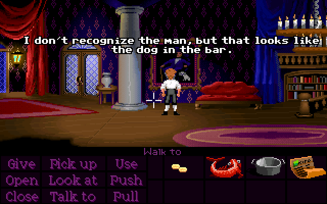
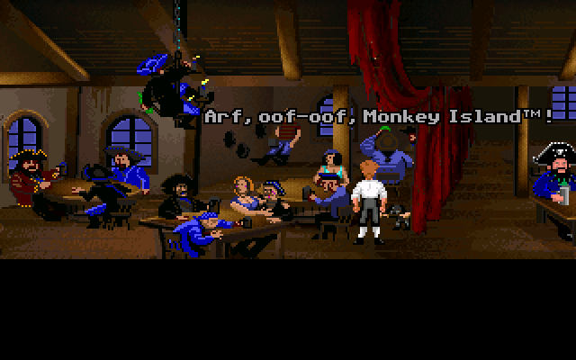

Normally, during the first of the two mansion cutscenes, Guybrush will briefly leave the chaos rooms to grab the vase before going back in, where he will then immediately break it.

However, if you take the vase before entering the chaos rooms, Guybrush will then put the vase back during the cutscene instead. After the cutscene ends, you can pick it back up again, and now it's yours forever (well, until it gets taken away at the beginning of Part 2).

You can also get the vase by simply skipping the cutscene before Guybrush breaks it.
If you take the vase all the way to the bar and destroy it before starting the cutscene, the entire moment will just be skipped, making the whole cutscene about three seconds shorter.
When Shinetop catches you trying to leave with the idol, he'll say something like "Where do you think you're going, Throomwald?", but the exact name variation is randomly-generated each time!

This is the exact same system that the Lookout uses. I've written a more in-depth explanation of how this works in that section.
The dog in the painting is actually Spiffy, the dog from the bar. Guybrush's description of the painting changes depending on whether or not he recognizes him. He'll either say "I don't recognize the man, but he has a great hat.", or "... but that looks like the dog in the bar."


Weirdly, simply talking to Spiffy isn't enough to trigger this line - we have to actually reach a certain point within Spiffy's dialogue tree before Guybrush will recognize him in the painting.
Specifically, we have to first say either "Woof", "Arf", or "Ruff" at the first dialogue choice, and then say "Wuf, 'LeChuck?'" at the second choice. If done correctly, Spiffy will talk about "Governor Marley" and "Monkey Island", and Guybrush will now recognize him when looking at the painting.
